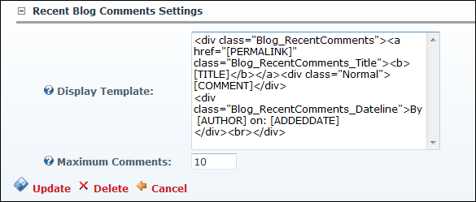

How to modify the template which defines the content, layout, style and number of blog comments on the Recent_Comments module which forms part of the Blog module suite.

Here is the default Display Template for comments:
< <divclass="Blog_RecentComments"><ahref="[PERMALINK]"class="Blog_RecentComments_Title">[TITLE]</a><divclass="Normal">[COMMENT]</div><divclass="Blog_RecentComments_Dateline">By [AUTHOR] on: [ADDEDDATE]</div></div> />